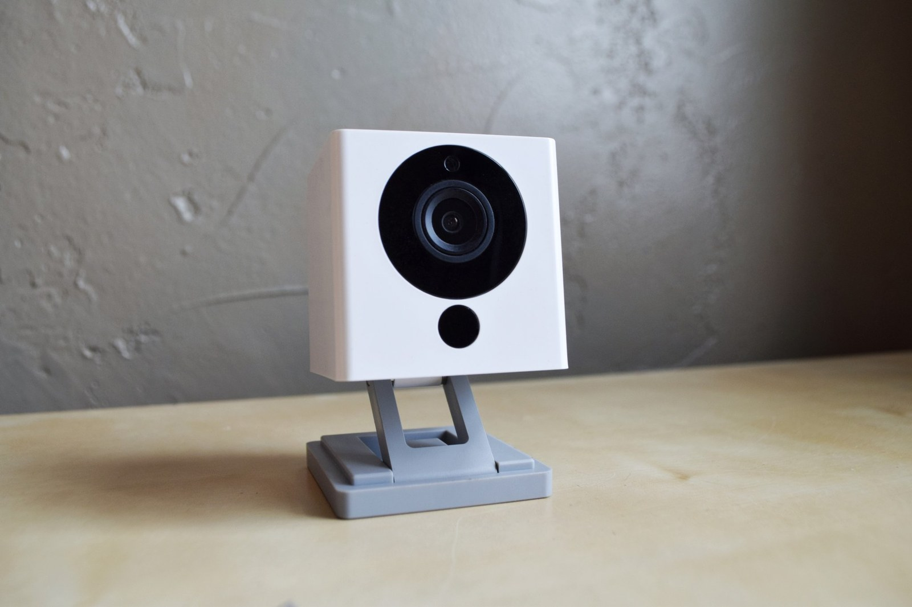

The Autopsy Report · Device #024
The Wyze Cam v2
The $20 security camera that embarrassed the whole industry — 1080p, night vision, and motion alerts for less than a pizza. Public-records edition: we haven't opened one yet, but the teardowns are unusually thorough.
What is this thing?
The Wyze Cam v2 is a 1080p home security camera: a small white cube with a magnetic base that streams video to your phone, records motion alerts, sees in the dark with infrared LEDs, and stores clips on a microSD card. Its party trick was the price — $19.99 at launch — undercutting cameras that cost five times more. Geeky Gadgets
It was made by Seattle-based Wyze Labs and filed with the FCC under ID 2ANJHWYZEC2 by grantee TianJin HuaLai Technology Co., Ltd. OpenIPC device page
Whose box is this?
Not ours — not yet. No unit of this device is on our bench. We haven't bought one, opened one, photographed one's insides, or listened to one boot. Everything on this page comes from public records: published teardowns, an iFixit repair guide, the OpenIPC community hardware page, launch coverage, and a freely-licensed stock photo credited below. When a unit lands on our bench, this report gets a second edition with our own photos, measurements, and boot log.
A short history
- 2017Wyze Labs — founded by former Amazon employees — ships the original Wyze Cam and proves the $20 camera is viable. Geeky Gadgets
- February 2018The Wyze Cam v2 goes up for preorder at $19.99 with an upgraded sensor, better motion detection, and improved audio. Geeky Gadgets
- March 2018The FCC grant for 2ANJHWYZEC2 issues, and teardowns begin identifying the Ingenic and Realtek silicon inside. EDN teardown
- 2018 – 2019iFixit publishes a full camera-replacement guide, and the OpenIPC community documents the hardware for open firmware research. iFixit repair guide OpenIPC device page
- 2020 – todayLater Wyze models arrive, but the v2 stays documented through its public teardowns and community firmware notes. iFixit device page OpenIPC device page
The outside
A small white cube with a magnetic base that sticks to metal surfaces, a micro-USB port for power, a microSD slot on the bottom, and a setup button. The lens stares out of the front face, ringed by infrared LEDs for night vision. iFixit repair guide

The board
We haven't held this board ourselves, so this is the teardowns' account, not ours. Published teardowns and the iFixit repair guide show a compact two-board stack: a sensor board carrying the image sensor and lens assembly, and a main board with the Ingenic application processor, a Realtek Wi-Fi chip, and a 128-Mbit serial flash chip holding the firmware. The microphone, speaker, and IR-cut filter for night vision round out the assembly. EDN teardown iFixit repair guide
One thing the EDN teardown is careful about: it identifies a 128-Mbit serial nonvolatile-memory device but does not firmly identify its manufacturer — and neither will we. The flash vendor on this board is unverified. EDN teardown
Under the microscope: the chips
What's on the board according to published teardowns, what each part does, and how sure we are. Confirmed means a primary source (the manufacturer, the FCC, or our own bench) verifies it. Likely means public hardware records agree on it, but we haven't verified it ourselves. Every row links somewhere you can read more.
| Chip | What it does | How we know | Dig deeper |
|---|---|---|---|
| Ingenic T20 / T20X | The main processor — a MIPS-based SoC built for cameras, handling video encoding and the whole device. | Likely Named by the EDN teardown, iFixit, and the OpenIPC hardware page. | OpenIPC device page |
| Realtek RTL8189FTV | The Wi-Fi radio — 2.4 GHz 802.11b/g/n. | Likely Named by the OpenIPC hardware page and corroborating teardowns. | OpenIPC device page |
| 128-Mbit serial flash manufacturer unverified |
Where the device's software lives when the power is off. | Likely Capacity reported by the EDN teardown; the vendor marking was not identified. | EDN teardown |
Datasheet note: we found no official manufacturer datasheet for the Ingenic T20 that we could verify — Ingenic's public documentation for this part is sparse, so we say so plainly rather than linking a random PDF. The same goes for the unidentified flash chip: no marking, no datasheet, no guess.
A note on scope: the OpenIPC project documents this hardware for open-source firmware research. We link their hardware page as a parts reference only — this report contains no firmware-flashing procedures, and we haven't flashed, dumped, or modified any firmware ourselves.
The government's file on this box
The Wyze Cam v2's FCC filing sits under FCC ID: 2ANJHWYZEC2, granted to TianJin HuaLai Technology Co., Ltd. on March 6, 2018, with internal photos listed among the public exhibits. FCC filing
An honest note on method: the FCC's mirror page for this ID blocked our automated lookup, so we did not independently re-verify the exhibit list this week — the details above come from the filing's public record as documented in our research notes. The filing itself remains public at the link above.
Listening to it boot
We haven't — there is no unit on our bench, so there is no boot log, no serial capture, nothing. That section gets written the day one arrives.
Our rule for debug ports, whenever we do meet this hardware: we listen, we don't knock. If the board exposes a serial console, we'll connect a read-only listener and record what the device volunteers about its own startup — and publish that. We won't use it to break in, dump firmware, or bypass anything. Whether this board exposes a console is currently unknown — it awaits the bench.
What we found
The $20 price was honest engineering, not a trick. The bill of materials is exactly what you'd expect: a camera-focused Ingenic SoC, a commodity Realtek Wi-Fi chip, and a modest flash part. Nothing exotic, nothing missing — just tight integration and thin margins. EDN teardown
The flash vendor is a genuine unknown. Even a careful EDN teardown couldn't name the 128-Mbit flash manufacturer from the markings. It's a small reminder that "we opened it" and "we identified everything" are different claims — we only make the first kind here until the bench says otherwise. EDN teardown
What we didn't do
- This device is not on our bench. We have not disassembled one.
- We captured no boot log and ran no bench tests.
- We have not touched, extracted, modified, or shared this device's firmware — and this page contains no flashing procedures.
- We have not probed any debug interface on it.
- The product photo above is a freely-licensed stock image, credited in its caption — not our photography.
By the numbers
- Model: Wyze Cam v2 (2018)
- FCC ID: 2ANJHWYZEC2 (grant March 6, 2018)
- Main chip: Ingenic T20/T20X (MIPS-based camera SoC)
- Wi-Fi: Realtek RTL8189FTV, 2.4 GHz 802.11b/g/n
- Storage: 128-Mbit serial flash (vendor unverified) + microSD slot
- Launched: February 2018 preorder at $19.99
Words to know
Every term this page uses, in plain English. No prior knowledge required.
- System on a chip (SoC)
- The whole computer — processor and friends — on one piece of silicon.
- Image sensor
- The chip that turns light into a digital picture — the camera's "eye."
- Infrared (IR) LEDs
- Lights the camera shines that humans can't see, so it can record in the dark.
- Serial flash
- A small chip that holds the device's software when the power is off, read one bit-stream at a time.
- Boot log
- The text a device prints as it starts up. Engineers read it to see what's inside without opening anything.
- UART / serial console
- A simple port that lets you watch a device narrate its own startup, line by line.
- Firmware
- The software baked into the device — the part that runs before anything else.
- FCC
- The Federal Communications Commission — the U.S. agency that regulates anything that transmits radio. Every wireless gadget sold here has to pass its tests first.
- FCC ID
- The ID the FCC assigns to each approved wireless product. The first few characters are the company's grantee code; the rest is the maker's model code. Punch it into fccid.io and the whole public filing comes up.
Sources & confidence
- Launch details (date, price): contemporaneous launch coverage. High confidence.
- Chip identities (Ingenic T20, Realtek RTL8189FTV): EDN teardown, iFixit, and the OpenIPC hardware page agree. Medium-high confidence; still Likely until our bench confirms.
- Flash capacity (128 Mbit) with unverified vendor: the EDN teardown states both halves explicitly. High confidence in the attribution.
- No official Ingenic T20 datasheet could be verified — stated plainly rather than papered over.
- FCC filing contents: documented in research notes; the mirror page blocked automated re-verification this week. Medium confidence — the filing itself is public at the link above.
- Anything not listed here is unknown until the bench says otherwise. We'll say so, out loud, when that's the case.
Public-records edition. This device is not on our bench. No disassembly, no boot log, no bench testing, and no firmware touched, extracted, modified, or shared. The stock photo is freely licensed and credited in its caption.
Legal note. BareBoard is an educational project. Everything on this page is assembled from public records and freely-licensed photography credited in its caption. We don't publish, host, or distribute firmware, keys, passwords, or credentials. Product names and trademarks belong to their respective owners and appear here only to identify the hardware. If you believe anything here infringes your rights, contact us and we'll address it promptly.